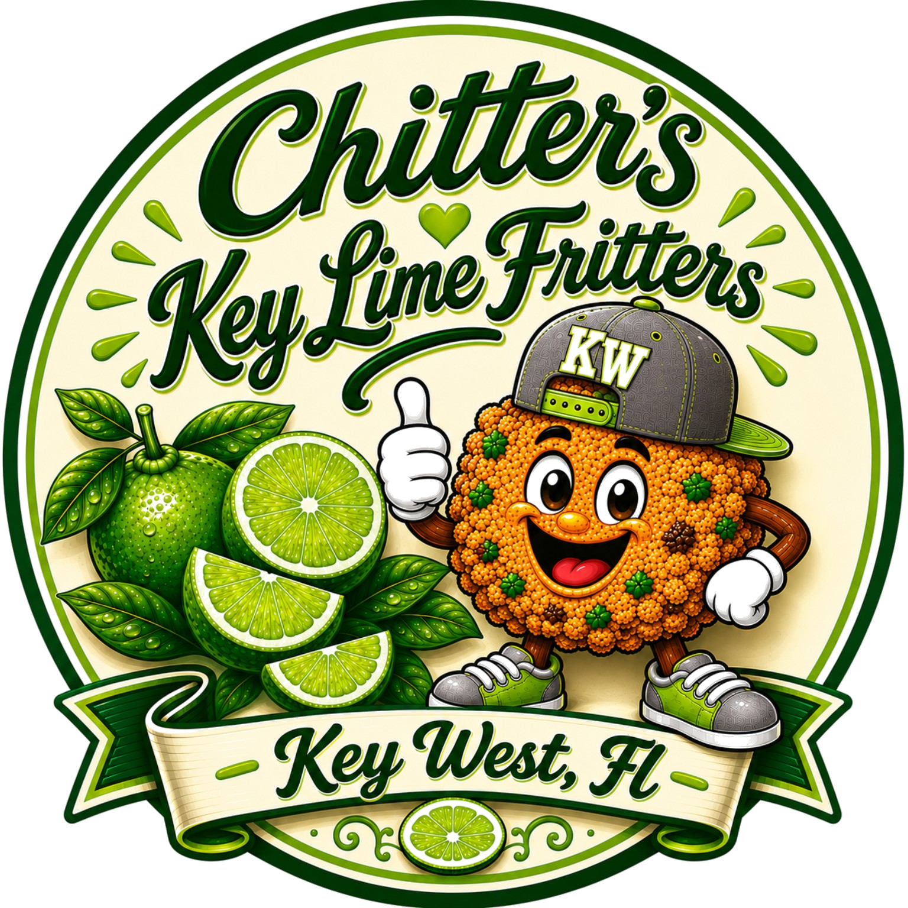

Built from family tradition, inspired by Key West, and crafted to bring people together one bite at a time.
Our online store, wholesale program, and nationwide shipping platform are currently being prepared.
For business, procurement, resort partnerships, retail opportunities, and wholesale inquiries:
sales@chittersfritters.com